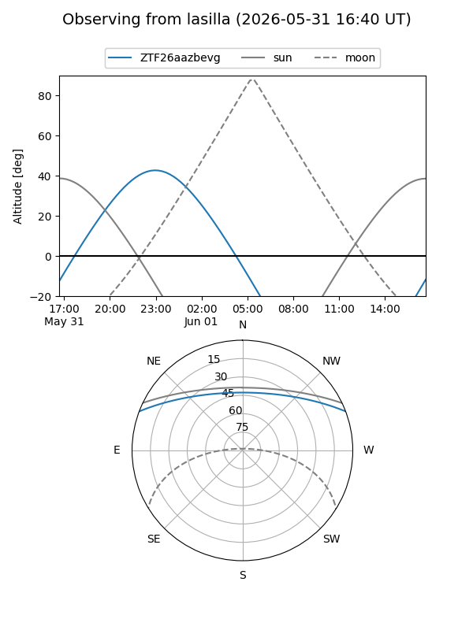
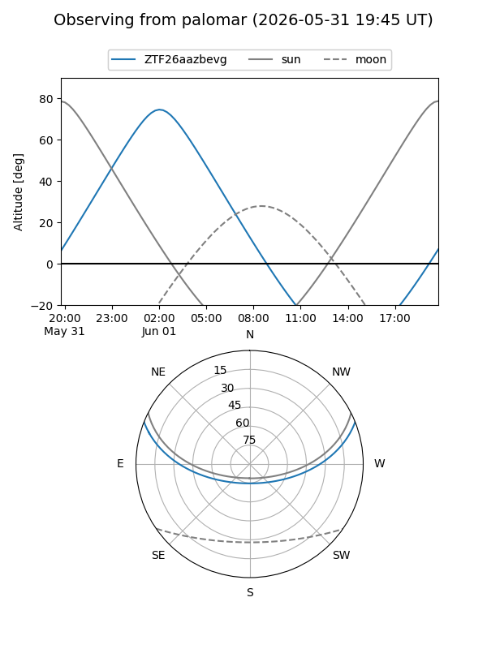

ZTF26aazbevg
Target ZTF26aazbevg at 2026-06-01 04:49
Aliases and brokers:
lsst-FINK: link
lsst-Lasair: link
lsst-ALeRCE: link
ztf-FINK: link
ztf-Lasair: link
ztf-ALeRCE: link
alt names
ZTF26aazbevg (ztf,fink_ztf)
Coordinates:
equatorial (ra, dec) = 162.8935,+18.13955
equatorial (HMS+DMS) = 10:51:34.44,+18:08:22.37
galactic (l, b) = (224.6338,+61.00478)
Flags:
Photometry:
last ztfg=19.63
1 ztfg detections
Lightcurve
Visibility


Additional plots